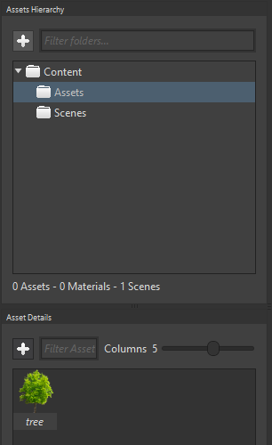
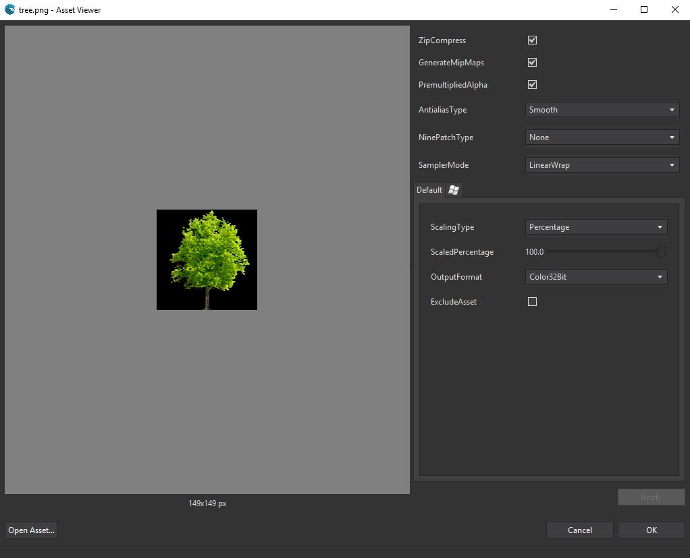

Goal

If you remember Super Mario Bros. for NES, everything on screen is made up of sprites: the scenario is broken into small square sprites (rocks and sky, for instance); Mario is an animated set of sprites conforming the different states (walking, jumping, etc.); and so on. In the end, every piece represented in screen is made of sprites. And a sprite is no further than an image, in the formats we all know, like PNG.
You will learn how to add a sprite into a scene. We will be using a static one but, as you will see in different pages, Wave Engine offers to easily build animations with those.
Hands-on
Wave Engine supports different types of images to be understood as a sprite: PNG, JPEG and BMP.
With Wave Visual Editor
Create a new project and begin by dragging and dropping an image into the Asset Details, more specifically inside the Assets folder.

Double click on it and have a look at its properties, you can tweak those to fit your needs:

Switch to 2D mode in the Editor and, as last step, drag and drop the asset from the Asset Details panel to the Viewport tab.

Have a look at the Entity Details panel: just by dragging and dropping we got a new Entity with its name set to "sprite" and the components Transform2D, Sprite and SpriteRenderer initialized. Magic, isn't it? :-)
With Visual Studio (for Windows or Mac)
Directly open MyScene.cs file. In order to reproduce what Wave Visual Editor does when you drag and drop the sprite, we need to create an empty Entity and add three components, as you would guess: Transform2D, Sprite and SpriteRenderer.
var sprite = new Entity()
.AddComponent(new Transform2D())
.AddComponent(new Sprite(WaveContent.Assets.tree_png))
.AddComponent(new SpriteRenderer());
this.EntityManager.Add(sprite);
If you end up running the game, the sprite will be drawn in screen, at the position specified in its Transform2D component ((0, 0) since it was not modified):

Wrap-up
We have seen how a static sprite can be added to a scene.
We have gone through code and have learnt to use Sprite and SpriteRenderer components to render a simple sprite.